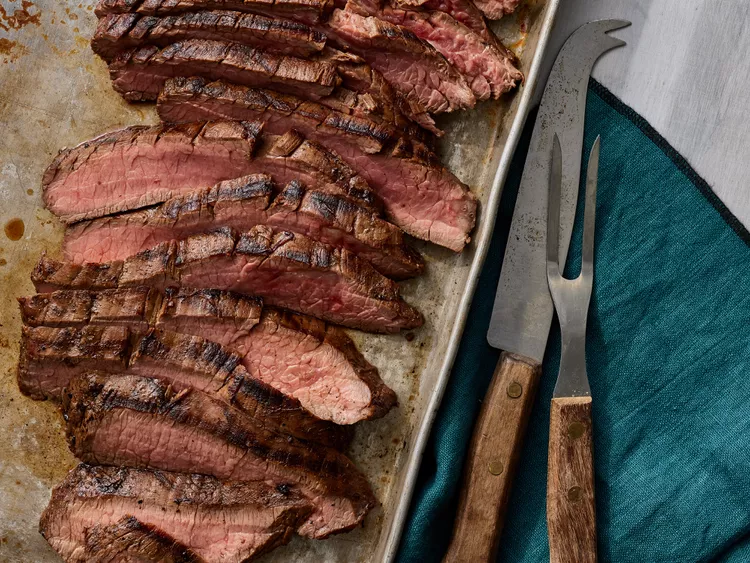

Steak Recipe

Description
A steak is a thick cut of meat generally sliced across the muscle fibers,
sometimes including a bone. It is normally grilled or fried. Steak can be
diced, cooked in sauce, such as in steak and kidney pie, or minced and
formed into patties, such as hamburgers.
Steaks are cut from animals including cattle, bison, buffalo, camel, goat,
horse, kangaroo, sheep, ostrich, pigs, turkey, and deer, as well as various
types of fish, especially salmon and large fish such as swordfish, shark,
and marlin. For some meats, such as pork, lamb and mutton, chevon, and veal,
these cuts are often referred to as chops. Some cured meat, such as gammon,
is commonly served as steak.
Ingredients
Marinade
- ½ cup vegetable oil
- ⅓ cup low-sodium soy sauce
- ¼ cup red wine vinegar
- 2 tablespoons fresh lemon juice
- 1½ tablespoons of steak sauce
- Worcestershire sauce
- Steak or Brown sauce
- Oyster sauce
- Balsamic vinegar
- Bbq sauce
- 1 tablespoon Dijon mustard
- 2 cloves garlic, minced
- ½ teaspoon ground black pepper
Steak
Steps
-
Gather all ingredients.

-
Whisk together oil, soy sauce, vinegar, lemon juice, Worcestershire sauce,
Dijon mustard, garlic, and pepper for marinade until thoroughly combined.
Place steak in a 9x13-inch glass baking dish.

-
Pour marinade over flank steak in the baking dish; turn several times to
coat thoroughly with marinade. Cover, and refrigerate for 2 to 6 hours, or
up to 12 hours if you have time.

-
When ready to cook, preheat an outdoor grill for medium-high heat and
lightly oil the grate.
-
Remove steak from the marinade and shake off excess. Discard the remaining
marinade.
-
Cook steak on the preheated grill for about 5 minutes per side, or to
desired doneness.

-
Remove from the grill and let rest for 5 minutes before slicing and serving.
-
Serve hot and enjoy!

Nutrition
- 363 Calories
- 28g Fat
- 4g Carbs
- 25g Protein
Homepage